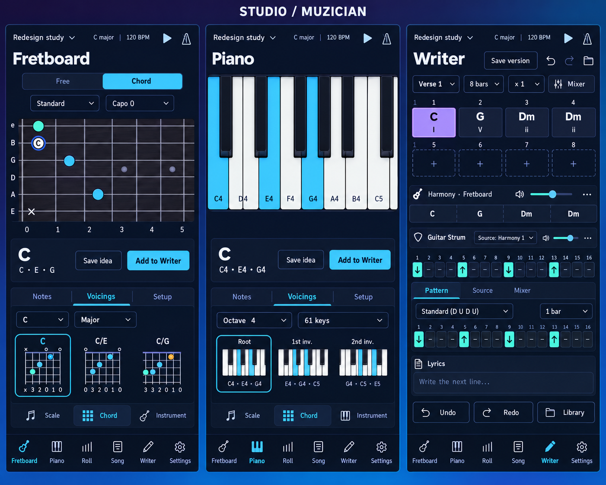

Night e indigo · Sky per le azioni · Violet per Harmony · Teal per lo strumming

Piano Roll
Griglia dominante, strumenti di editing visibili e Stack Builder aperto. Stesso layout nelle due palette per confrontare la leggibilità.
Mockup concettuali generati con imagegen. Nessuna modifica all'app. Diagrammi, allineamenti delle note e target touch richiedono validazione nel prototipo; le imprecisioni residue sono documentate nelle note Studio.
Le altre quattro direzioni iniziali
Confronto delle cinque direzioni